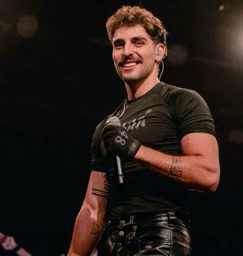
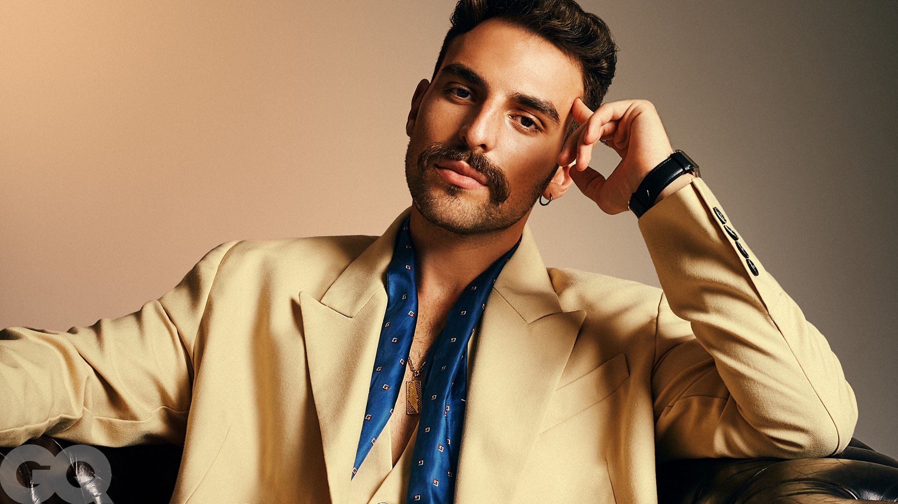

“Nails”in ilk birkaç saniyesi Saint Levant’ın kariyerini anlatmak için neredeyse fazla iyi. Hayatta kendisini gerçekten strese sokan tek şeyin vize olduğunu söylüyor; ardından bir celebrity name-drop, okuldan ve üniversiteden geri dönen eski tanıdıklar ve şarkının bütün tezini taşıyan küçük bir ayrıntı geliyor: bir zamanlar tırnaklarından nefret ediyorlardı.
Buradaki dramatik mekanizma çok basit. Saint Levant ünlü olmadan önce aynı insanlar onun görünüşünü küçümsüyor. Ünlü olduktan sonra aynı farklılık karizma haline geliyor. Değişen tırnaklar değil; statü. “Nails” tam da bu tersine dönüşün şarkısı.
Sizin bana bakışınız değişti.”
Şarkının başarısı, özgüven brag’ini kişisel bir biyografi ayrıntısına bağlamasında: boyalı tırnaklar önce alay konusu, sonra star image’ın parçası.
01THE ORIGINMarwan Abdelhamid nasıl Saint Levant oldu?
Saint Levant’ın gerçek adı Marwan Abdelhamid. 2000 yılında Kudüs’te, Fransız-Cezayirli bir anne ile Filistinli-Sırp bir babanın çocuğu olarak doğdu. Çocukluğunun ilk yıllarını Gazze’de geçirdi; ailesi 2007’de Amman’a taşındı. Daha sonra California’ya giderek University of California, Santa Barbara’da International Relations okudu.
Kendi anlatımına göre Arapça, Fransızca ve İngilizce arasında büyüdü. Bugün şarkılarında yaptığı dil geçişleri, sonradan kurulmuş bir “global artist” numarasından çok günlük yaşamın devamı: arkadaşlarıyla Arapça, evde Fransızca, Amerika’da İngilizce. NPR’ye verdiği röportajda bu çok-kültürlü bileşimi doğrudan kendi müzikal kimliğinin hammaddesi olarak tarif ediyor.
Sahne adının doğuşu da bütün sahne kimliğini küçük ölçekte özetliyor. Marwan, 21 Savage dinlerken “Saint Laurent Don” ifadesini yanlışlıkla “Saint Levant Don” diye duyuyor; kullanıcı adının boş olduğunu fark edip alıyor. Takipçilerine anket açtığında çoğunluk “hayır” diyor. İsmi yine de bırakmıyor. “Levant”ın bölgesel çağrışımı da kelime oyununa kişisel coğrafya ekliyor.
02THE BREAKTHROUGH“Very Few Friends” ve ilk Saint Levant imajı
Erken kayıtlar 2021’e kadar gidiyor; büyük kırılma ise 2022’deki “Very Few Friends”. NME’ye göre Saint Levant şarkının bir bölümünü TikTok’a koydu, ertesi gün video yaklaşık bir milyon görüntülenmeye ulaştı ve oluşan talep üzerine parçayı beş gün gibi çok kısa bir sürede platformlara yetiştirdi. 2023 baharında kayıt Spotify’da 50 milyon stream’i geçmişti.
Bu dönem kamu imajı çok netti: üç dilli, flörtöz, biraz lover-boy, 2000’ler R&B’si ile Arap melodik dünyası arasında dolaşan genç bir adam. 6 Mart 2023’te From Gaza, With Love geldi. İki buçuk ay sonra “Nails” yayımlandı ve ton değişmeye başladı.
03THE RECORD2 dakika 55 saniyelik geri tepme
“Nails”, 25 Mayıs 2023’te MDLBEAST Records üzerinden yayımlandı. Süresi 2:55. Qobuz parçayı Pop, Shazam Hip-Hop/Rap olarak sınıflandırıyor; The FADER ise house dokunuşlu elektronik itişe dikkat çekiyor. Bu tür kararsızlığı parçanın kendisi üretiyor: rap akışı, elektronik pop iskeleti ve fashion-runway enerjisine yaklaşan hızlı bir beat aynı yerde.
2026 Eylül ortasındaki indekslenmiş Spotify snapshot’ları şarkıyı yaklaşık 16,8 milyon stream civarında gösteriyor; resmî video ise yaklaşık 8,2 milyon görüntülenme ölçeğinde. Bunlar canlı sayaçlar değil, araştırma anındaki web snapshot’ları.
Kredilerde küçük bir metadata bilmecesi de var. Qobuz, Playyard’ı prodüktör ve Marwan Abdelhamid’i composer olarak gösteriyor. Shazam songwriting tarafında Marwan Abdelhamid + Henry James Morris isimlerini veriyor; bazı lyric metadata kaynaklarında Domenico “Buddy” Caderni de writer olarak geçiyor.
Saint Levant’ın vokali ve ana yazarlık kimliği.
UCSB döneminden gelen erken yaratıcı ortak; Saint Levant’ın ilk sound’unun merkezindeki isimlerden.
Bazı kaynaklarda writer olarak görünür; tüm servisler aynı publishing split’i göstermiyor.
Henry Morris / Playyard ortaklığı “Nails”ten önce de resmî kayıtlarda görünüyordu.
Playyard’ın Henry Morris’in müzikal projesi olması önemli. Marwan ve Henry UCSB döneminde aynı yaratıcı çevredeydiler; erken Saint Levant sound’u büyük ölçüde Marwan’ın çok dilli yazarlığı + Henry Morris’in California merkezli elektronik/R&B prodüksiyonu üzerinden gelişti.
04THE SYMBOLŞarkının gizli konusu başarı değil
“Nails” yüzeyde bir başarı marşı. Ama derinde daha ilginç bir mesele var: başarı geldikten sonra insanların geçmişi nasıl yeniden yazdığı. Lisede görünüşüyle alay edilen çocuk, üniversiteden tanıdığı insanların artık kendisinden kariyer tavsiyesi istediğini söylüyor; internette eleştirenler hâlâ konuşuyor. Bütün bunların sembolü ise boyalı tırnaklar.
THE LINE“they used to hate on my nails”
Saint Levant birkaç yıl sonra GRAMMY röportajında bu estetik tercihin daha geniş anlamını kendisi de açıklıyor. Arap dinleyici içinde onun sensuality’si ve alışıldık erkeklik kalıplarına uymayan görüntüsü üzerine eleştiriler olduğunu anlatırken kendisini, bir dönem tırnaklarını boyayan heteroseksüel bir Arap erkek olarak tarif ediyor ve insanların “ne yapması gerektiğine” ilişkin beklentilerine uymayacağını söylüyor.
Dolayısıyla “Nails” aynı anda üç şey yapıyor: başarı intikamı, geleneksel erkeklik beklentilerine karşı kendilik savunması ve kendi egosunu teatral biçimde kullanan bir yıldız kimliği inşası.

Şarkının Arapça tarafı da bunu güçlendiriyor. Tekrarlanan “shayef 7alak” günlük kullanımda kabaca “kendini bir şey sanıyorsun / havalısın / kendini beğenmişsin” anlam alanında. Saint Levant’ın cevabı eleştiriyi reddetmiyor; sahipleniyor. “Egoist görünüyorsun.” Cevap: evet.
“Maro” Marwan’ın lakabı. Şarkıda geçen “Marek” referansının menajeri Marek Razzouk olması kuvvetle muhtemel; daha sonraki kaynaklar Razzouk’u menajeri olarak doğruluyor. Fakat Saint Levant’ın lyric referansını doğrudan açıkladığı bir annotation bulunmadığı için bunu olasılık olarak bırakmak gerekiyor.
05THE VIDEOMia Khalifa, nail shop ve bir fashion-film evreni
Şarkının en magazinel hamlesi daha ilk verse’te kuruluyor: Saint Levant, sevgilisinin kendisini Mia Khalifa’nın takip etmesinden hoşlanmadığına dair bir espri yapıyor. Sonra video açılıyor ve Mia Khalifa gerçekten karşımıza çıkıyor. Burada ayrım önemli: Khalifa şarkının müzikal featuring’i değil; klibin guest star’ı.
The FADER bu seçimi parçanın “standing out” fikriyle ilişkilendiriyor. Her iki isim de internette yoğun yargıya maruz kalmış kamu figürleri; cameo bu yüzden yalnızca celebrity trick değil, şarkının dışarıdan gelen ahlakçılık, yorum ve kendini saklamama temalarıyla da uyumlu. Saint Levant’ın bizzat “Mia’yı şu nedenle seçtim” diye konsepti uzun uzun açıkladığı güvenilir bir röportaj bulunmadığı için daha ileri bir özel ilişki hikâyesi kurmak doğru olmaz.
Video prodüksiyonu ise beklenenden çok daha kapsamlı:
Videonun ana yönetmenlik imzası.
Coming of Age yaratıcı dünyası.
Sinematik, fashion-film görünümünün görüntü yönetimi.
Sinema salonu, nail-shop ve set-içinde-set hissini taşıyan tasarım.
Performans dilinin hareket tasarımı.
Saint Levant’ın erken star image’ını taşıyan styling.
Prodüksiyon Los Angeles’ta gerçekleştirildi; kredilerde Grand Central Market’a özel teşekkür de yer alıyor. Dönemin production materials’ı eski tip sinema, nail shop ve set içinde set hissinin bir bölümünün tasarlanmış prodüksiyon dünyası olduğunu gösteriyor. Yani ekrandaki her iç mekânı gerçek ve bağımsız bir lokasyon gibi okumamak gerekiyor.
Sonuç rap klibinden çok fashion film + camp performans + erkeklik gösterisi + celebrity cameo + star-image construction karışımı.

06THE CALLBACKSonra vize şakası gerçekten hayatına yetişiyor
2 Eylül 2026’da Saint Levant, ABD vizesinin ek background-check sürecine alınması nedeniyle AFANDI World Tour’un Kuzey Amerika ayağını 2027 baharına ertelediğini açıkladı.
“Nails” 2023’te vizeyi rahat bir punchline olarak kullanıyor. Üç yıl sonra Saint Levant, Kuzey Amerika turnesini gerçekten vize süreci nedeniyle ertelemek zorunda kaldı. Kendi açıklamasına göre başvuru önce onaylandı, ardından beklenmedik biçimde ek background check sürecine alındı ve bunun aylar sürebileceği bildirildi. Uzun süredir ABD vizesi konusunda sorun yaşadığını da söyledi.
Bunu “Nails’in kehaneti” diye romantize etmek doğru olmaz. Ama biyografik ironi olağanüstü: 2023’teki en hafif punchline, 2026’da kariyerin en somut lojistik problemlerinden biri.
07THE LIVE LIFE“Nails” sahnede yaşamaya devam etti mi?
Evet. Setlist.fm kullanıcı katkılı bir arşiv olduğu için rakamları resmî turne istatistiği gibi almamak gerekiyor; ancak “Nails” kayıtlı Saint Levant konserlerinde 13 kez görünüyor ve erken katalogdaki en sık çalınan parçalardan biri.
2024 Coachella setlerinde de repertuvardaydı. 2026’nın mevcut kayıtlarında ise DEIRA, Love Letters ve yeni AFANDI materyali daha baskın; “Nails” görünmüyor. Bu da parçanın bugünkü setin merkezi olmaktan çok, ilk büyük yıldız-kimliğini kurma döneminin kalıcı belgesi haline geldiğini düşündürüyor.
08THE SHIFTDEIRA, Gazze ve kariyer merkezinin değişmesi
“Nails” doğrudan Filistin üzerine bir şarkı değil. Bu ayrımı korumak önemli. Fakat Saint Levant’ın sonraki işleri giderek daha fazla ailesi, Gazze çocukluğu, sürgün, hafıza ve Filistin kimliği çevresinde şekillendi.
NPR’nin 2024 profilinde Saint Levant, babasının Gazze’de kurduğu Al Deira Hoteli çocukluk hafızasının merkezlerinden biri olarak anlatıyor. Otel 2023 savaşında ağır biçimde zarar gördü; Saint Levant kendi açıklamasında Kasım 2023’te bombalandığını söylüyor. DEIRA projesi de bu kişisel hafıza ve kayıp duygusuyla yeni bir anlam kazandı. Bu politik ve kültürel çerçeve, sanatçının kendi açıklamalarına ve habercilik kaynaklarına atıfla aktarılıyor.
Kronoloji içinde “Nails” bu yüzden ilginç bir eşik. Öncesinde lover-boy Saint Levant. “Nails”te fame ve eleştiriyi fark etmiş, sahne kimliğini geri tepme aracına çevirmiş Saint Levant. Ardından DEIRA ve sonraki projelerde kültürel hafıza çok daha merkezi hale geliyor.
09THE INFRASTRUCTURE2048 yalnızca bir imprint değil
Saint Levant’ın erken döneminde gördüğümüz 2048 adı da daha büyük bir fikre bağlanıyor. Esquire’a anlattığına göre müziği profesyonel denemeye karar verdiğinde mentorlarından birinden home studio kurmak için 5.000 dolar istedi ve bütçeyi Excel’de hazırladı. Mentor Tarek Loubani parayı verirken ileride başkalarına yardım etmesi koşulunu koydu; Saint Levant bunu 2048 Foundation fikrinin başlangıcı olarak anlatıyor.
Bu hikâye erken Saint Levant döneminin girişimci refleksini açıklıyor: müzik kariyerini bir start-up gibi planlamak, düzenli üretmek, sosyal medyayı doğrudan dağıtım kanalı olarak kullanmak ve daha sonra oluşan ağı başka yaratıcı projeleri desteklemek için değerlendirmek.
10THE SCALE2026 Saint Levant artık başka ölçekte
17 Eylül 2026 tarihli Chartmetric snapshot’ında Saint Levant yaklaşık 3,6 milyon aylık Spotify dinleyicisi, 876,9 bin Spotify takipçisi, 859 bin YouTube abonesi, 3,5 milyon Instagram ve 3,4 milyon TikTok takipçisi ölçeğinde görünüyordu. Bunlar dinamik platform verilerinin araştırma tarihindeki snapshot’ları; canlı sayaç değil.
Haziran 2026’da Prada’nın ilk Filistin doğumlu marka elçisi olarak açıklandı. 21 Ağustos 2026’da 12 parçalık AFANDI / افندي yayımlandı. Albümde Haifa Wehbe ve Mohammed Assaf gibi isimlerle işbirlikleri bulunuyor. Türkiye ayağı da sürüyor: AFANDI World Tour kapsamında 10 Aralık 2026’da İstanbul Volkswagen Arena konseri planlanmış durumda.
11THE TRANSITIONNeden “Nails” bir geçiş şarkısı?
Kronoloji bunu oldukça iyi gösteriyor: 2021–22 erken dönem denemeler ve Playyard/Henry Morris ortaklığı; 2022 sonu “Very Few Friends”; Mart 2023 From Gaza, With Love; Mayıs 2023 “Nails”; 2024 DEIRA; 2025 Love Letters / رسائل حب; 2026 AFANDI / افندي.
Bu sırada “Nails” çok net bir ara kapı. “Very Few Friends”te arzu nesnesi; “Nails”te celebrity; DEIRAda hafıza ve kökler; Love Letters ve AFANDIde bölgesel pop mirasıyla çok daha açık bir diyalog. Yani “Nails”, Saint Levant’ın henüz bugünkü büyük kültürel figüre dönüşmeden önce kendi yıldız kimliğini ilk kez bilinçli biçimde yazdığı şarkı.
12THE LAST WORDTırnaklar neden hâlâ önemli?
Bütün ayrıntıları yan yana koyunca şarkının merkezindeki mesele şaşırtıcı derecede netleşiyor. Bir çocuk istediği gibi giyiniyor. Tırnaklarını boyuyor. İnsanlar dalga geçiyor. Sonra o çocuk internette viral oluyor. Milyonlarca insan dinlemeye başlıyor. Dün küçümseyenler bugün iş istiyor. Moda dünyası geliyor. Celebrity dünyası geliyor. Mia Khalifa klipte beliriyor. Coachella, Prada ve dünya turnesi geliyor.
Bu yüzden “Nails”i yalnızca “başardım, şimdi siz düşünün” şarkısı olarak görmek yüzeysel. Asıl fikir daha keskin: toplum, bir insanın farklılığını çoğu zaman ancak başarı o farklılığa prestij verdikten sonra kabul ediyor.
Saint Levant’ın cevabı hiçbir zaman “bakın, aslında normalim” olmuyor. Tam tersi: normal olmak zorunda olmadığını söylüyor. Ve şarkının en güçlü sembolü bu yüzden dev bir politik metafor değil; sadece o yaşta istediği gibi görünmesine izin verilmeyen bir çocuğun küçük estetik tercihi.
Tırnaklar değişmedi. Onlara bakan dünya değişti.
Yazan ISC Editorial · Yayın: 19 Eylül 2026
Kaynakça & Further Reading 18 kaynak · tıklayarak aç / kapat
- Saint Levant — “Nails” Official Video25 Mayıs 2023 yayın tarihi, Mia Khalifa guest appearance ve tam video prodüksiyon kredileri.
- Qobuz — “Nails”2:55 süre, MDLBEAST Records, Playyard prodüksiyonu ve Marwan Abdelhamid composer kredisi.
- Shazam — “Nails”Tempo, Marwan Abdelhamid ve Henry James Morris songwriter kredileri; lyric metadata.
- The FADER — Saint Levant & Mia KhalifaŞarkının outsider/standing-out teması ve cameo bağlamı.
- GRAMMY.com — Saint Levant interviewArap erkekliği, boyalı tırnaklar, norm beklentileri ve kendilik ifadesi.
- NME — Saint Levant interview“Very Few Friends” TikTok kırılması ve erken kariyer bağlamı.
- Alserkal Online — Saint Levant: Home-makerSahne adının ortaya çıkış hikâyesi.
- NPR — Saint Levant / DEIRAKudüs–Gazze–Amman geçmişi, çok-dilli yetişme biçimi ve Al Deira Hotel’in aile hafızasındaki yeri.
- Qobuz — “I Guess”Henry Morris / Playyard ile erken dönem yaratıcı ortaklığın kredileri.
- Esquire — Five Fits With Saint LevantHome studio için 5.000 dolar, çalışma modeli ve 2048 Foundation’ın başlangıç anlatısı.
- Anadolu Agency — US visa / AFANDI tour2 Eylül 2026 tarihli Kuzey Amerika turnesi ertelemesi ve ek background-check süreci.
- Setlist.fm — Saint Levant“Nails”in kaydedilmiş canlı performansları; kullanıcı katkılı arşiv olarak değerlendirildi.
- Chartmetric — Saint Levant17 Eylül 2026 tarihli Spotify, YouTube, Instagram ve TikTok ölçek snapshot’ı.
- The National — PradaHaziran 2026 Prada ambassador duyurusu.
- Apple Music — Saint Levant / AFANDI21 Ağustos 2026 tarihli 12 parçalık albüm ve güncel katalog.
- Biletix — AFANDI World Tour İstanbul10 Aralık 2026 Volkswagen Arena konseri.
- Rolling Stone MENA — Ratchopper interviewMarek Razzouk’un Saint Levant’ın menajeri olarak doğrulanması ve sonraki dönem prodüksiyon ağı.
- Georgetown / Saint Levant biographyErken yaşam ve eğitim bağlamını destekleyen biyografik kaynak.
Editoryal not: Spotify, Chartmetric ve YouTube rakamları araştırma tarihinde erişilebilen snapshot’lardır; canlı sayaç değildir. Setlist.fm kullanıcı katkılı bir arşivdir. Şarkıdaki “Marek” referansının Marek Razzouk olduğu olası görünse de Saint Levant’ın bunu doğrudan açıkladığı bir lyric annotation bulunmadığı için kesin bilgi olarak sunulmamıştır. Gazze ve Filistin’e ilişkin politik/kültürel ifadeler Saint Levant’ın kendi açıklamalarına ve kaynakların açıkça aktardığı olgulara atıfla verilmiştir.